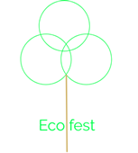

Eco fest
Recycling
Eco fest is helping the enviroment by cleang all the rubish up and recycle it and after the event and if you saty behind and help clen up you will be give 10p for each pllastic bottle and any other plastic objected and we will use cups that are made up of recycled plastsic and if you bring your own reuseable cup you will get 25p of your drink all the fork knifes and spoon are made of wood and there are recycling bins all over the festival